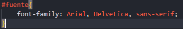
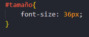
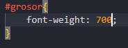
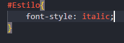
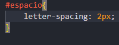
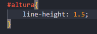
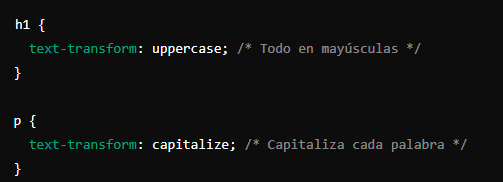
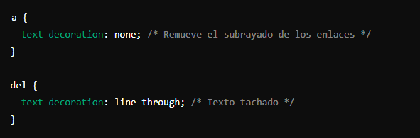
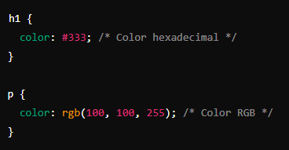
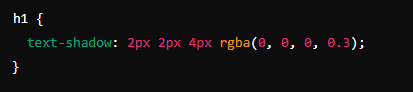

| Estilos letras | Descripción | Atributos | Como se ve |
|---|---|---|---|
| Fuente (Font-Family): | Define la tipografía que se usará. Puedes especificar una fuente específica o una familia de fuentes. |  | Arial |
| Tamaño de la Fuente (Font-Size): | Controla el tamaño del texto. |  | Tamaño |
| Grosor de la Fuente (Font-Weight): | Ajusta el grosor del texto. usa valores numéricos como 400, 700 o bold |  | Grosor texto |
| Estilo de la Fuente (Font-Style): | Cambia el estilo del texto a cursiva o normal. |  | Cursiva o normal. |
| Espaciado entre Letras (Letter-Spacing): | Ajusta el espacio entre las letras. |  | Espacio |
| Altura de Línea (Line-Height): | Define la altura de una línea de texto. Un valor relativo, también puedes usar px |  | altura |
| Transformación de Texto (Text-Transform): | Controla la capitalización del texto. |  | capitalización |
| Decoración del Texto (Text-Decoration): | Agrega subrayado, tachado, etc. |  | Decoro texto |
| Color de Texto (Color): | Cambia el color del texto. |  | Color de mi texto |
| Sombras de Texto (Text-Shadow): | Aplica sombras al texto. |  | Sombras para texto |
| Alineación del Texto (Text-Align): | Alinea el texto a la izquierda, derecha, centro o justificado. | text-align: center; text-align: justify; text-align: right; |
Texto |
| Estilo de Mayúsculas y Minúsculas (Text-Transform): | Define si el texto debe estar en mayúsculas, minúsculas o con la primera letra de cada palabra en mayúscula. | text-transform: uppercase; "Todo en mayúsculas" text-transform: lowercase; "Todo en minúsculas" | Mayúsculas y Minúsculas |